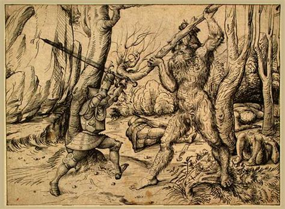

The wild man (also wildman, or "wildman of the woods") is a mythical figure that appears in the artwork and literature of medieval Europe, comparable to the satyr or faun type in classical mythology and to Silvanus, the Roman god of the woodlands. The defining characteristic of the figure is its "wildness"; from the 12th century they were consistently depicted as being covered with hair. Images of wild men appear in the carved and painted roof bosses where intersecting ogee vaults meet in Canterbury Cathedral, in positions where one is also likely to encounter the vegetal Green Man. The image of the wild man survived to appear as supporter for heraldic coats-of-arms, especially in Germany, well into the 16th century. Renaissance engravers in Germany and Italy were particularly fond of wild men, wild women, and wild families, with examples from Martin Schongauer (died 1491) and Albrecht Dürer (1471–1528) among others.
Figures similar to the European wild man occur worldwide from very early times. The earliest recorded example of the type is the character Enkidu of the ancient Mesopotamian Epic of Gilgamesh. The description of Nebuchadnezzar II in the Book of Daniel (2nd century BC) greatly influenced the medieval European concepts. Daniel 4 depicts God humbling the Babylonian king for his boastfulness; stricken mad and ejected from human society, he grows hair on his body and lives like a beast. This image was popular in medieval depictions of Nebuchadnezzar. Similarly, late medieval legends of Saint John Chrysostom (died 407) describe the saint's asceticism as making him so isolated and feral that hunters who capture him cannot tell if he is man or beast. Pontus and his train disguised as wild men at the wedding of Genelet and Sidonia. Illustration of a manuscript of a German version of Pontus and Sidonia (CPG 142, fol. 122r, c. 1475). The medieval wild-man concept also drew on lore about similar beings from the Classical world such as the Roman faun and Silvanus, and perhaps even Heracles. Several folk traditions about the wild man correspond with ancient practices and beliefs. Notably, peasants in the Grisons tried to capture the wild man by getting him drunk and tying him up in hopes that he would give them his wisdom in exchange for freedom. This suggests an association with an ancient tradition – recorded as early as Xenophon (d. 354 BC) and appearing in the works of Ovid, Pausanias, and Claudius Aelianus – in which shepherds caught a forest being, here termed Silenus or Faunus, in the same manner and for the same purpose. Besides mythological influences, medieval wild man lore also drew on the learned writings of ancient historians, though likely to a lesser degree.[18] These ancient wild men are naked and sometimes covered with hair, though importantly the texts generally localize them in some faraway land, distinguishing them from the medieval wild man who was thought to exist just at the boundaries of civilization. The first historian to describe such beings, Herodotus (c. 484 BC – c. 425 BC), places them in western Libya alongside the headless men with eyes in their chest and dog-faced creatures.[19] After the appearance of the former Persian court physician Ctesias's book Indika (concerning India), which recorded Persian beliefs about the subcontinent, and the conquests of Alexander the Great, India became the primary home of fantastic creatures in the Western imagination, and wild men were frequently described as living there.[19] Megasthenes, Seleucus I Nicator's ambassador to Chandragupta Maurya, wrote of two kinds of men to be found in India whom he explicitly describes as wild: first, a creature brought to court whose toes faced backwards; second, a tribe of forest people who had no mouths and who sustained themselves with smells. Both Quintus Curtius Rufus and Arrian refer to Alexander himself meeting with a tribe of fish-eating savages while on his Indian campaign. Distorted accounts of apes may have contributed to both the ancient and medieval conception of the wild man. In his Natural History Pliny the Elder describes a race of silvestres, wild creatures in India who had humanoid bodies but a coat of fur, fangs, and no capacity to speak – a description that fits gibbons indigenous to the area. The ancient Carthaginian explorer Hanno the Navigator (fl. 500 BC) reported an encounter with a tribe of savage men and hairy women in what may have been Sierra Leone; their interpreters called them "Gorillae," a story which much later originated the name of the gorilla species and could indeed have related to a great ape. Similarly, the Greek historian Agatharchides describes what may have been chimpanzees as tribes of agile, promiscuous "seed-eaters" and "wood-eaters" living in Ethiopia.